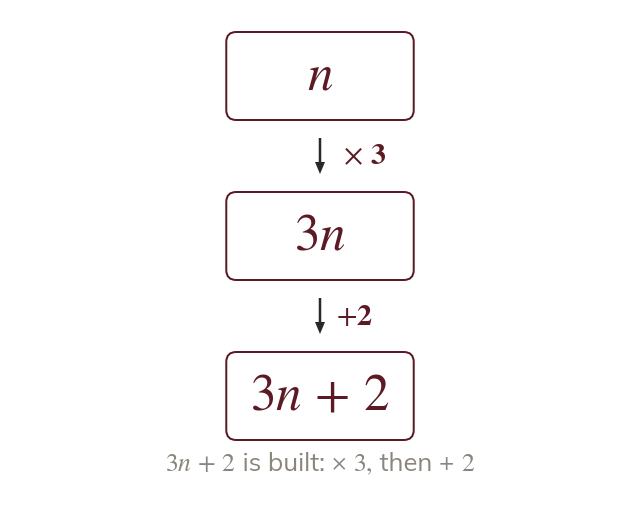

Undo in reverse
A two-step equation applies two operations to the unknown. Solve backwards, undoing the last operation first.
A two-step equation applies two operations to the unknown, so solving works backwards, undoing the last operation first.